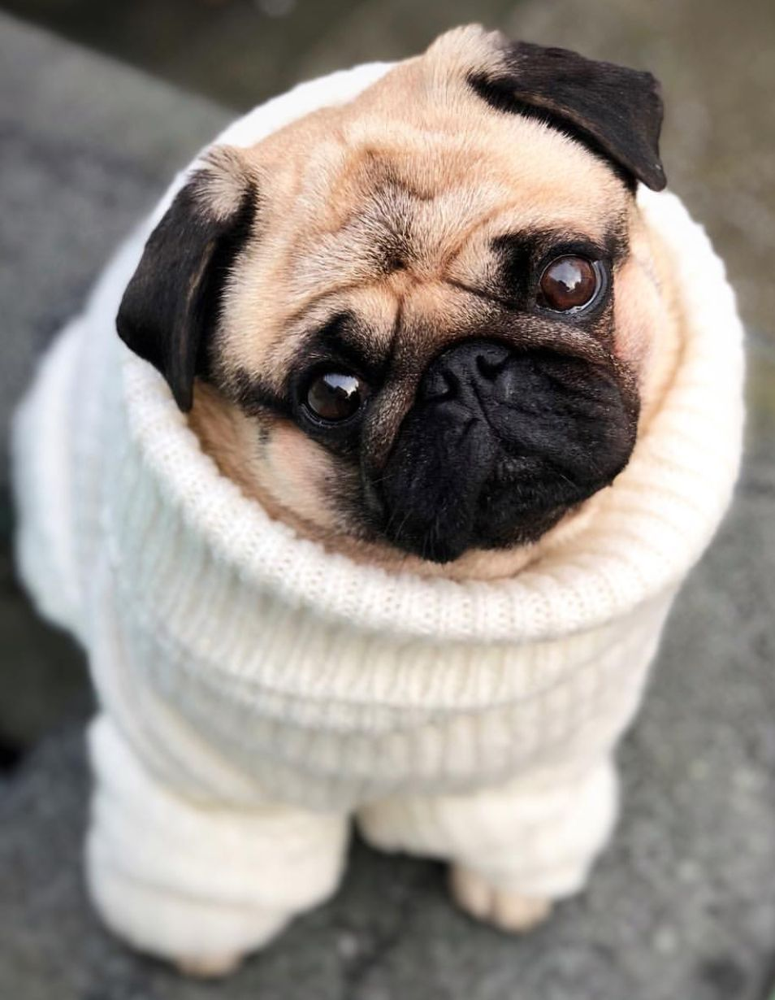
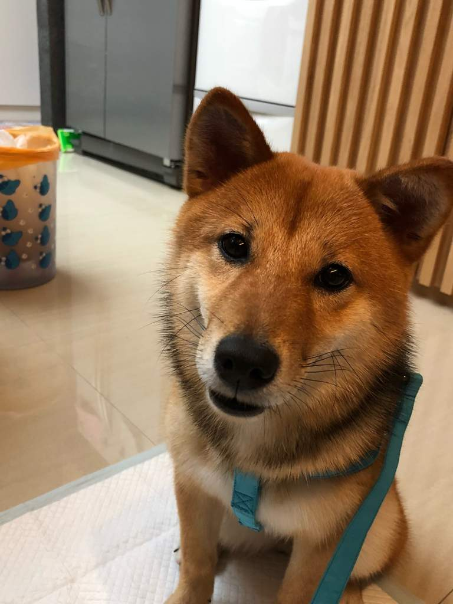
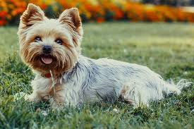
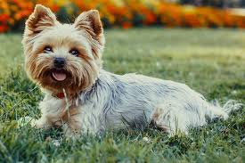

Inbreeding is when animals breed with other animals with the same genetic traits. For example, if a shiba inu breeds with another shiba inu (sibling or not sibling doesn't really matter, just has to be the same breed). Animals are also sometimes bred with their siblings and cousins, or in extreme cases, with their parents. Breeders are responsible for these actions, and inbreeding animals results in abnormal genetics in the animals, such as heart problems, obesity, severe skin disease, diabetes, tumors, epilepsy, bronchitis, depending on the type of breed and how many generations of these animals have been bre. Why they do this? To make the 'perfect breed'. Pretty stupid right?
Many inbreeding can even cause animal extinction over time, because of outbreeding depression. This term describes when inbred animals have no other animal to mate with they resort to distant species, which would result in a lack of fitness and nutrients.
Why are breeders inbreeding animals? Breeders are inbreeding animals because it is thought that by inbreeding animal breeds together they will produce attractive animals, which when sold will bring the breeder money for their own greed. Some inbred dog breeds include poodles, beagles, golden retrievers, german shepherds, labrador retrievers, yorkshire terriers, shih tzus, bulldogs, and shiba inus. You can help these animals by restraining them from making purchases in a pet store, because most pet stores sell inbred animals, and if an inbred animal is bought the ignorant breeder will receive money from the purchase. If you can, adopt an animal from the shelters. Click the back arrow to go back to the main page.


 
